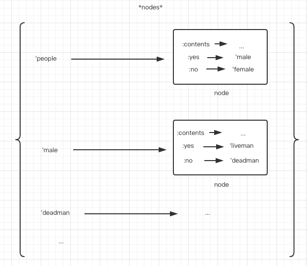
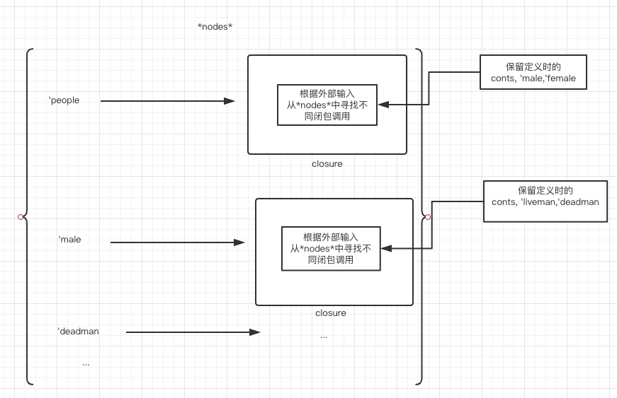
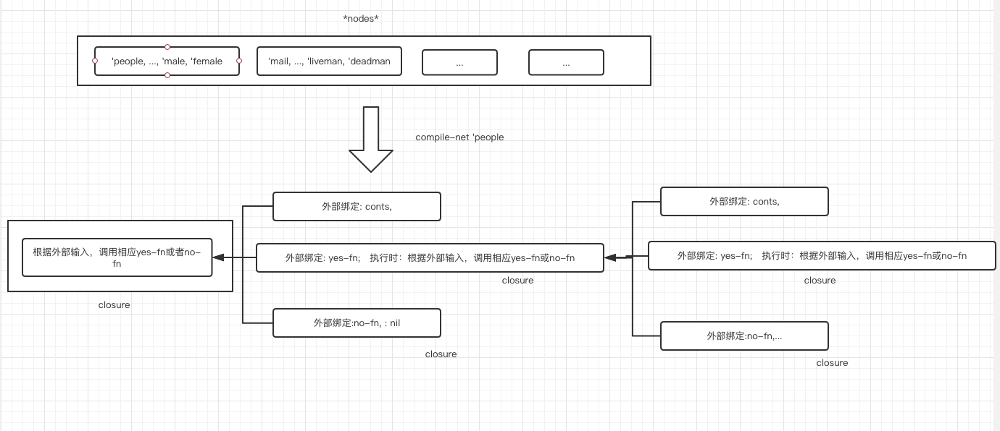

阅读 On Lisp
On Lisp 是一本讲解lisp宏使用技巧的书，之前囫囵吞枣翻阅过，最近拿起来从头开始拜读。故在此记录一些学到的知识，本文会随着学习的进度而更新。
Table of Contents
1 symbol-value 和 symbol-function
common lisp is a lisp-2 language, funtion and variable have different name space,
所以一个symbol可以同时是一个function和variable
用 symbol-value 获取变量值
用 symbol-function 获取函数值
;;假设有个double1的symbol: ;;设置该symbol的value (setq double1 4) or (setf (symbol-value 'double1) 5) ;;设置该symbol的function (setf (symbol-function 'double1) #'(lambda (x) (* x 2))) ;; #'foo 是 (function foo)的缩写 ;; 可以理解为将名字映射到实际的函数对象 #'double1 返回的是上面定义的函数对象 ;; lambda 表达式可以同时是函数和函数名字 #'(lambda (x) (* x 2)) 返回的也是函数对象 ;; 所以 defun 等价于 (defun double1 (x) (* x 2)) (setf (symbol-function 'double1) (lambda (x) (* x 2))) or (setf (symbol-function 'double1) #'(lambda (x) (* x 2))) ;; 再来看一个闭包的例子 (defun make-adder (n) #'(lambda (x) (+ x n))) (setf add2 (make-adder 2)) ;; 调用add2 的结果 (add2 4) => The function COMMON-LISP-USER::ADDER2 is undefined. [Condition of type UNDEFINED-FUNCTION] Restarts: 0: [CONTINUE] Retry using ADDER2. 1: [USE-VALUE] Use specified function 2: [RETRY] Retry SLIME REPL evaluation request. 3: [*ABORT] Return to SLIME's top level. 4: [ABORT] abort thread (#<THREAD "new-repl-thread" RUNNING {10052AAAF3}>) Backtrace: 0: (SYMBOL-FUNCTION ADDER2) <---注意这里 1: (SB-INT:SIMPLE-EVAL-IN-LEXENV (ADDER2 4) #<NULL-LEXENV>) 2: (EVAL (ADDER2 4)) ;; 因为setf 是设置 symbol add2 的 symbol-value ;; 当(add2 4)这样调用的时候回去找 'add2 的symbol-function, 所以找不到 ;; 所以正确的调用方式如下 (funcall add2 4) or (funcall (symbol-value 'add2) 4)
2 apply 和 funcall
作用都是对函数求值，区别在于 apply 接受的函数将被作用到一个列表，该列表由余下的参数cons到最后一个产生，所以最后一个参数一定要是一个列表
如果不方便以列表形式提供参数，则使用funcall
(apply #'+ '(1 2)) (apply #'+ 1 '(2)) (funcall #'+ 1 2)
3 模拟面向对象中的"方法"(method)
;; 根据动物不同种类做不同事情 (defun behave (animal) (case animal (dog (wag-tail) (bark)) (rat (scurry) (squeak)) (cat (rub-legs) (scratch-carpet)))) ;; 当需要添加一直动物时，就得修改上述代码 ;; 为了更好的扩展性，可以如下做 (defun dehave (animal) (funcall (get animal 'behavior))) (setf (get 'dog 'behavior) #'(lambda () (wag-tail) (bark)) ... ;; 这样类似于面向对象里面的方法
4 尾递归优化
许多common lisp编译器可以把尾递归转化成循环，如果使用这种编译器，可以在源代码里写优雅的递归而不必担心函数调用在运行期产生的系统开销
;; 下列函数不是一个尾递归 (defun our-length (lst) (if (null lst) 0 (1+ (our-length (cdr lst))))) ;; 通常不是尾递归的函数可以使用一个累积器(accumulator)的局部函数嵌入到其中，从而转化成一个尾递归形式 (defun our-length (lst) (labels ((rec (lst acc) (if (null lst) acc (rec (cdr lst) (1+ acc))))) (rec lst 0))) ;; 通过在调用树从上往下走的过程中累计这个值，而不是从下往上返回的时候再计算
另外许多编译器虽然能做尾递归优化，但这不是所有编译器的默认行为，所以在编写尾递归函数时，应该把 (proclaim '(optimize speed)) 写在文件前面， 以确保编译器进行优化
下面是一个递归->尾递归->迭代的示例:
;;; filter函数的作用是给的一个函数fn,一个列表lst, 将fn作用在lst中的每个元素，如果结果不为nil,则将值收集到一个列表中返回 ;; 第一版定义 (defun filter (fn lst) (labels ((rec (lst) (if (null lst) nil (let ((val (funcall fn (car lst)))) (if val (cons val (rec (cdr lst))) (rec (cdr lst))))))) (rec lst))) ;; 可以看出该函数采用递归方式，将fn分别作用在(car lst)和（cdr lst）上，再根据结果选择是否cons起来 ;; 第二版定义: 尾递归 (defun filter (fn lst) (labels ((rec (lst acc) (if (null lst) acc (let ((val (funcall fn (car lst)))) (if val (rec (cdr lst) (cons val acc)) (rec (cdr lst) acc)))))) (nreverse (rec lst nil)))) ;; 采用内部累积器acc, 将每次结果累积到acc里一直传下去，到达最后直接返回acc ;; 第三版定义: 循环 (defun filter (fn lst) (let ((acc nil)) (dolist (x lst) (let ((val (funcall fn x))) (if val (push val acc)))) (nreverse acc))) ;; 此形式类似于上面第二版本尾递归形式的编译器优化版本。将尾递归递归转化成迭代 ;; 这里将第二版每次传递的累积器acc剥离到外层，不再传递它，而是每次对它进行修改； ;; 对于列表的聚积操作来说， 上述定义中的push和nrevese组合是标准的lisp用法
5 编译
lisp 函数可以单独编译或者按文件编译。
如果在toplevel下输入一个defun表达式 (defun foo (x) (1+ x)) ，多数实现会创先相应的解释函数(interpreted funtion), 可以使用 (compiled-funtion-p #'foo) 来检查函数是否编译过。
使用 compile 来编译函数，如 (compile 'foo)
使用 compile-file 来编译整个文件
(compile nil '(lambda (x) (+ x 2))) 会编译里面的lambda表达式
(progn (compile 'bar '(lambda (x) (* x 3))) (compiled-function-p #'bar)) ;; 上面(compile 'bar '(lambda (x) (* x 3))) 相当于便以一个defun bar
;; 当某些小函数调用开销会超出执行开销时，可以内联编译 (defun 50th (lst) (nth 49 lst)) (proclaim '(inline 50th)) ;; 这样当编译foo时， 50th代码会被编译到内部 (defun foo (lst) (+ (50th lst) 1)) ;; 就好像是原来写的就是下面这样 (defun foo (lst) (+ (nth 49 lst) 1)) ;; 缺点是改动50th的话，要重新编译foo, 否则foo还是用的原来的
6 迷思: 使用一堆新操作符(实用工具/utils)让程序难读懂？
以下摘自原书4.8节
如果你在代码里用了大量实用工具,有的读者可能会抱怨这种程序晦涩难懂。那些还没能自如使用Lisp的人只能习惯阅读原始的Lisp。 事实上,他们可能一直就无法认同可扩展语言的理念。当读到一个严重依赖实用工具的程序时,在他们看来,作者可能是完全出于怪癖而决定用某种私人语言来写 程序。
会有人提出,所有这些新操作符让程序更难读了。他认为必须首先理解所有的这些新操作符,才能读懂程序。 要想知道为什么这类说法是错误的,不妨想想第27页的那个例子,在那里我们想要找到最近的书店。如果用
find2来写程序,有人可能会抱怨说,在他能够读懂这个程序之前,必须先理解这个实用工具的定义。好吧,假设你没有用find2。那么现在可以不用先理解find2了,但是读者将不得不去理解find-books的定义,该函数相当于把find2和查找书店的特定任务混在了一起。理解find2并不比理解find-books更难。另一方面,在这里我们只用了一次这个新的实用工具。实用工具意味着重复使用。在实际的程序里,它意味着在下列两种情况中做出选择,理解find2,或者不得不去理解三到四种特定的搜索例程。显然前者更容易些。所以,阅读自底向上的程序确实需要理解作者定义的所有新操作符。但它的工作量几乎总是比理解在没有这些操作符的情况下的所有代码要少很多。
如果人们抱怨说使用实用工具使得你的代码难于阅读了,他们很可能根本没有意识到,如果你不使用这些实用工具的话代码看起来将是什么样子。自底向上程序设计让本来规模很大的程序看起来短小简单。给人的感觉就是,这程序并没有做很多事,所以应该很好懂。当缺乏经验的读者们更仔细地阅读程序,结果发现事情并没有想象的那么简单,他们就会灰心丧气。
我们在其他领域观察到了相同的现象:设计合理的机器可能部件数量更少,但是看起来会感觉更复杂,因为这些部件被安置在了更小的空间里。自底向上的程序有种感官上的紧密性。阅读这种程序 可能需要花一些力气,但如果不是这样写的话,你会需要花更多的精力来读懂它们。
有一种情况下,你应该有意地避免使用实用工具,即:如果你需要写一个小程序,它将独立于其余部分的代码发布。一个实用工具通常至少要被使用两到三次才值得引入,但在小程序里如果一个实用工具用得太少的话,可能就没有必要包含它了。
7 语言正交性
正交的语言让我们只需运用多种方式对数量有限的操作符加以组合，就能获得强大的表达能力。玩具积木是非常正交的，而套装塑料模型就很难说他是正交的。
common lisp 有一个函数 complement, 作用是接受一个谓词 p 作为参数，返回一个函数 p1 ， 同样的参数情况下，这个 p1 的返回值总和 p 得到相反:
(defun complement (fn) #'(lambda (&rest args) (not (apply fn args))))
这样common lisp提供的几组互补的函数就可以用 complement 配合一个得到另一个，比如:
(remove-if-not #'pred lst) (remove-if (complement #'pred) lst) ;; 这样就没有必要有remove-if-not(虽然remove-if-not 会比 remove-if 更常用))
同样 setf 宏也增强Lisp的正交性，Lisp早期的方言会用成对的函数分别实现读数据和写数据，在common lisp里，只有读数据，写数据使用 setf 配合读数据实现的:
;; 获取ball的color (get 'ball 'color) ;;设置ball的color (setf (get 'ball 'color) 'red) ;; 获取hash中key对应的值 (gethash key hash-table) ;; 设置key对应的值 (setf (gethash key hash-table) 'some-value)
还有种成对方式出现的函数：函数和它的破坏性版本，比如: remove-if 和 delete-if, reverse 和 nreverse, append 和 nconc 。我们或许不能让common lisp变得更精简，但可以定义一些新操作符，像 complement 和 setf 那样达到差不多效果:
;; 存储fn和它的破坏性版本fn! (defvar *!equivs* (make-hash-table)) ;; 获取fn对应的破坏性版本fn! (defun ! (fn) (or (gethash fn *!equivs*) fn)) ;; 设置fn对应的破坏性版本fn! (defun def! (fn fn!) (setf (gethash fn *!equivs*) fn!))
这样，一旦定义了:
(def! #'remove-if #'delete-if)
就可以把:
(delete-if #'oddp lst)
改写成:
(funcall (! #'remove-if) #'oddp lst) ;; 虽然上面的代码在common lisp有些尴尬，它模糊了这个思路的良好初衷，要是用Scheme就会明了很多 ((! remove-if) oddo lst) ;; 可以通过 ! 一眼看出来现在调用的是remove-if的破坏性版本
另外由于函数及其对应破坏性版本的取舍经常在运行期之前就能确定，所以把 ! 定义成宏或许是更高效的选择。
8 缓存函数和复合函数(函数as参数和返回值)
缓存函数 memoize:
(defun memoize (fn) (let ((cache (make-hash-table :test #'equal))) #'(lambda (&rest args) (multiple-value-bind (val win) (gethash fn cache) (if win val (setf (gethash fn cache) (apply fn args))))))) ;; 局限: ;; 1.参数列表是equal的调用才是等同，对于有些关键字参数函数过于严格 ;; 2.对于返回单值的函数才有效(无法保存和返回多值)
单纯复合函数 compose :
;; 定义 (defun compose (&rest fns) (if fns (let ((fn1 (car (last fns))) (fns (butlast fns))) #'(lambda (&rest args) (reduce #'funcall fns :from-end t :initial-value (apply fn1 args)))) #'identity)) ;; 使用 CL-USER> (funcall (compose #'1+ #'find-if) #'oddp '(2 3 4 5)) 4 ;; (compose #'list #'1+) ;; 等价于 #'(lambda (x) (list (1+ x)))
复合函数 fif fint fun :
(defun fif (if then &optional else) #'(lambda (x) (if (funcall if x) (funcall then x) (if else (funcall else x))))) ;; fint means "function intersection"(函数交集) (defun fint (fn &rest fns) (if (null fns) fn (let ((chain (apply #'fint fns))) #'(lambda (x) (and (funcall fn x) (funcall chain x)))))) ;; fun means "function union"(函数并集) (defun fun (fn &rest fns) (if (null fns) fn (let ((chain (apply #'fun fns))) #'(lambda (x) (or (funcall fn x) (funcall chain x))))))
这样的话：
;; 1.这种常见的模式: (mapcar #'(lambda (x) (if (slave x) (owner x) (employer x))) people) ;; 可以写成: (mapcar (fif #'slave #'owner #'employer) people) ;; 2.这种常见的模式: (find-if #'(lambda (x) (and (signed x) (sealed x) (delivered x))) docs) ;; 可以写成: (find-if (fint #'signed #'sealed #'delivered) docs) ;; 3.这种常见的模式: (find-if #'(lambda (x) (or (signed x) (sealed x) (delivered x))) docs) ;; 可以写成: (find-if (fun #'signed #'sealed #'delivered) docs)
9 闭包与数据结构
通常说来,数据结构被用来描述事物。可以用数组描述坐标变换,用树结构表示命令的层次结构, 而用图来表示铁路网。在lisp里,我们常会使用闭包作为表现形式。在闭包里,变量绑定可以保存信 息,也能扮演在复杂数据结构中指针的角色。如果让一组闭包之间共享绑定,或者让它们之间能相互 引用,那么我们就可以创建混合型的对象类型,它同时继承了数据结构和程序逻辑两者的优点。 其实在表象之下,共享绑定就是指针。闭包只是让我们能在更高的抽象层面上操作指针。通过用 闭包来表示我们以往用静态数据结构表示的对象,就往往可能得到更为优雅,效率更好的程序。
比如说要实现下面这个 twenty questions 游戏：
> (run-node ’people) Is the person a man? >> yes Is he living? >> no Was he American? >> yes Is he on a coin? >> yes Is the coin a penny? >> yes LINCOLN
版本1（数据结构版）：
;; 存放name->node的关系 (defvar *nodes* (make-hash-table)) ;; 存放每个node的数据 (defstruct node contents yes no) ;; 定义函数，用来向相应的数据结构存放内容 (defun defnode (name conts &optional yes no) (setf (gethash name *nodes*) (make-node :contents conts :yes yes :no no))) ;; 遍历函数，用来遍历数据结构，根据数据结构里的内容，产生不同的行为 (defun run-node (name) (let ((n (gethash name *nodes*))) (cond ((node-yes n) (format t "~a~%>> " (node-contents n)) (case (read) (yes (run-node (node-yes n))) (t (run-node (node-no n))))) (t (node-contents n))))) ;; 定义函数的使用 (defnode 'people "Is the person a man?" 'male 'female) (defnode 'male "Is he living?" 'liveman 'deadman) (defnode 'deadman "Was he American?" 'us 'them) (defnode 'us "Is he on a coin?" 'coin 'cidence) (defnode 'coin "Is the coin a penny?" 'penny 'coins) (defnode 'penny 'lincoln) ;; 遍历函数的使用；程序的入口 ;; (run-node 'people)
其中数据结构如下图所示:

版本2(closure版)：
;; 存放name->closure的关系 (defvar *nodes* (make-hash-table)) ;; 定义函数，生成对应closure，并且存放到*nodes*里 (defun defnode (name conts &optional yes no) (setf (gethash name *nodes*) (if yes #'(lambda () (format t "~a~%>> " conts) (case (read) (yes (funcall (gethash yes *nodes*))) (t (funcall (gethash no *nodes*))))) #'(lambda () conts)))) ;; 定义函数的使用 (defnode 'people "Is the person a man?" 'male 'female) (defnode 'male "Is he living?" 'liveman 'deadman) (defnode 'deadman "Was he American?" 'us 'them) (defnode 'us "Is he on a coin?" 'coin 'cidence) (defnode 'coin "Is the coin a penny?" 'penny 'coins) (defnode 'penny 'lincoln) ;; 程序的入口 ;; (funcall (gethash 'people *nodes*))
可以看到，该版本没有“遍历函数”了，使用的时候直接调用存放在 *nodes* 中已经生成的closure。
其中 *node* 的结构图如下：

版本3（编译的closure）:
;; 存放定义时数据 (defvar *nodes* nil) ;; 定义的函数 (defun defnode (&rest args) (push args *nodes*) args) ;; 根据 定义时存放的数据 来生成 整个运行的程序 (defun compile-net (root) (let ((node (assoc root *nodes*))) (if (null node) nil (let ((conts (second node)) (yes (third node)) (no (fourth node))) (if yes (let ((yes-fn (compile-net yes)) (no-fn (compile-net no))) #'(lambda () (format t "~a~%>>" conts) (funcall (if (eq (read) 'yes) yes-fn no-fn)))) #'(lambda () conts)))))) ;; 定义函数的使用 (defnode 'people "Is the person a man?" 'male 'female) (defnode 'male "Is he living?" 'liveman 'deadman) (defnode 'deadman "Was he American?" 'us 'them) (defnode 'us "Is he on a coin?" 'coin 'cidence) (defnode 'coin "Is the coin a penny?" 'penny 'coins) (defnode 'penny 'lincoln) ;; 程序的入口 ;; (setf n (compile-net 'people)) ;; (funcall n)
相应的数据结构和编译后的结构如下:

其中在编译好的函数 n 后， *nodes* 已经可以垃圾回收了，里面相应的数据关系已经绑定到了闭包 n 中。
10 使用宏还是函数
10.1 当别无他法时
10.1.1 宏可以控制对参数的求值，可以求值一次，多次或者不求值
宏的这种控制主要体现在四个方面:
1.变换。例如 setf, (setf (car x) ’a) 需要 展开为 (progn (rplaca x ’a) ’a) 2.绑定。例如 let, 它的实参需要作为展开的lambda表达式的形参出现 3.条件求值。例如 when, 参数在条件为真时再求值 4.多重求职。例如do, 这样可以对特定的参数求值多次，比如每次的step form
10.1.2 宏展开式内联到宏调用的词法环境
这种优势体现在:
- 利用调用环境
(defmacro foo (x) `(+ ,x y))
- 包装新环境，比如let
- 减少函数调用，将运行时的开销转到了编译时期
值得注意的是，上面1，2两点也会产生变量捕捉等问题。
11 宏与于函数优缺点
11.1 宏优点
- 编译期计算
- 和lisp集成
- 免除函数调用
11.2 函数优点
- 函数即数据
- 源代码清晰
- 运行期清晰
- 递归
12 宏陷阱
12.1 变量捕捉
12.1.1 宏参数捕捉
;; 宏定义 (defmacro for ((var start stop) &body body) `(do ((,var ,start (1+ ,var)) (limit ,stop)) ((> ,var limit)) ,@body)) ;; 使用case1 (for (x 1 5) (princ x)) ;; 宏展开 (macroexpand-1 '(for (x 1 5) (princ x))) (DO ((X 1 (1+ X)) (LIMIT 5)) ((> X LIMIT)) (PRINC X)) ;; 使用case2 (for (limit 1 5) (princ limit)) ;; 宏展开 (macroexpand-1 '(for (limit 1 5) (princ limit))) (DO ((LIMIT 1 (1+ LIMIT)) (LIMIT 5)) ((> LIMIT LIMIT)) (PRINC LIMIT)) ;; 使用case3 (let ((limit 5)) (for (i 1 5) (when (> i limit) (princ i)))) ;; 宏展开 (macroexpand-1 '(let ((limit 5)) (for (i 1 10) (when (> i limit) (princ i))))) (LET ((LIMIT 5)) (DO ((I 1 (1+ I)) (LIMIT 10)) ((> I LIMIT)) (WHEN (> I LIMIT) (PRINC I))))
12.1.2 自由符号捕捉
(defvar w nil) ; wrong 这里的w会和在调用环境中的w产生作用 (defmacro gripe (warning) `(progn (setq w (nconc w (list ,warning))) nil))
12.2 求值次数
正确的版本: (defmacro for ((var start stop) &body body) (let ((gstop (gensym))) `(do ((,var ,start (1+ ,var)) (,gstop ,stop)) ((> ,var ,gstop)) ,@body))) 导致多重求值: (defmacro for ((var start stop) &body body) `(do ((,var ,start (1+ ,var))) ((> ,var ,stop)) ,@body))
12.3 求值顺序
错误的求值顺序: (defmacro for ((var start stop) &body body) (let ((gstop (gensym))) `(do ((,gstop ,stop) (,var ,start (1+ ,var))) ((> ,var ,gstop)) ,@body))) 使用: > (let ((x 1)) (for (i x (setq x 13)) (princ i))) 12345678910111213 NIL 引用自原书10.2: 尽管上面的例子是杜撰的,但是这类问题确实还会时有发生,而且这种bug很难找出来。或许很少有人会写出这样的代码,让宏一个参数的求值影响到另一个参数的返回值,但是人们在无意中做的事情,有可能并非出自本心。尽管在有意这样用时,应当正常工作,但是这不是让bug藏身于实用工具的理由。如果有人写出的代码和前例相似,它很可能是误写成的,但 for 的正确版本将使错误更容易 检测出来。
12.4 非函数式的展开器
一个宏调用可以,并且经常会被展开不只一次。例如,一个对你代码进行变换的预处理器在它决定是否变换代码之前,可能不得不展 表达式中的宏调用。 这是一条普适的规则,即:展开器代码除其参数外不应依赖其他任何东西。所以任何宏,比如说通过字符串来构造展开式的那种,应当小心不要对宏展开时所在的包作任何假设。
;; case1 依赖全局变量来计数，假设每次调用展开一次（错误） (defmacro nil! (x) ; wrong (incf *nil!s*) `(setf ,x nil)) ;; case2 依赖包，假设展开的包里含有opstring的定义（错误） (defmacro string-call (opstring &rest args) ; wrong `(,(intern opstring) ,@args))
展开式代码中的副作用有时会带来一些问题,CLTL(78页)提到,Common Lisp并不保证绑定在 &rest 形参上的列表是新生成的。它们可能会和程序其他地方的列表共享数据结构。
后果就是,你不能破坏性地修改 &rest 形参,因为你不知道你将会改掉其他什么东西。
;; case3 修改&rest args列表 (defmacro echo (&rest args) `’,(nconc args (list ’amen))) 然后定义一个函数来调用它: (defun foo () (echo x)) 在一个广泛使用的Common Lisp中,则会观察到下面的现象: > (foo) (X AMEN AMEN) > (foo) (X AMEN AMEN AMEN) ;; 然而，我实验的两个实现ccl和sbcl都不出出现上述这个问题，看来是将这种易于出问题的情况规避了
12.5 递归
nth 的例子：
这个可以工作: (defun ntha (n lst) (if (= n 0) (car lst) (ntha (- n 1) (cdr lst)))) 这个不能编译（依赖n的值，而编译器没有值，所以会一直展开下去）: (defmacro nthb (n lst) `(if (= ,n 0) (car ,lst) (nthb (- ,n 1) (cdr ,lst)))) 解决方法：将宏改成宏和函数的组合 解决问题的方法一: (defmacro nthd (n lst) `(nth-fn ,n ,lst)) (defun nth-fn (n lst) (if (= n 0) (car lst) (nth-fn (- n 1) (cdr lst)))) 解决问题的方法而: (defmacro nthe (n lst) `(labels ((nth-fn (n lst) (if (= n 0) (car lst) (nth-fn (- n 1) (cdr lst))))) (nth-fn ,n ,lst)))
or 的例子
;; case1 转化成宏和函数 (defmacro ora (&rest args) (or-expand args)) (defun or-expand (args) (if (null args) nil (let ((sym (gensym))) `(let ((,sym ,(car args))) (if ,sym ,sym ,(or-expand (cdr args))))))) ;; case2 这里递归调用自身没问题，因为它终止的条件是依赖参数个数，而不是值 (defmacro orb (&rest args) (if (null args) nil (let ((sym (gensym))) `(let ((,sym ,(car args))) (if ,sym ,sym (orb ,@(cdr args)))))))
13 常用宏
13.1 创建上下文
13.1.1 自定义let
;; 定义 CL-USER> (defmacro our-let (binds &body body) `((lambda ,(mapcar #'(lambda (x) (if (consp x) (car x) x)) binds) ,@body) ,@(mapcar #'(lambda (x) (if (consp x) (cadr x) nil)) binds))) OUR-LET ;; 效果 CL-USER> (our-let ((x 1) (y 2)) (+ x y)) 3 ;; 展开成(macroexpand): ((LAMBDA (X Y) (+ X Y)) 1 2)
13.1.2 模仿let*的when-bind*
when-bind* 接受一个由成对的 (symbol expression) form 所组成的列表就和 let 的第一个参数的形式相同。如果任何 expression返回nil, 那整个when-bind*返回nil
;; 定义 CL-USER> (defmacro when-bind* (binds &body body) (if (null binds) `(progn ,@body) `(let (,(car binds)) (if ,(caar binds) (when-bind* ,(cdr binds) ,@body))))) WHEN-BIND* CL-USER> (when-bind* ((x (find-if #'consp '(a (1 2) b))) (y (find-if #'oddp x))) (+ y 10)) 11 CL-USER> ;; macroexpand ;; step1 (LET ((X (FIND-IF #'CONSP '(A (1 2) B)))) (IF X (WHEN-BIND* ((Y (FIND-IF #'ODDP X))) (+ Y 10)))) ;;step2 (LET ((X (FIND-IF #'CONSP '(A (1 2) B)))) (IF X (LET ((Y (FIND-IF #'ODDP X))) (IF Y (WHEN-BIND* NIL (+ Y 10)))))) ;; step3 (LET ((X (FIND-IF #'CONSP '(A (1 2) B)))) (IF X (LET ((Y (FIND-IF #'ODDP X))) (IF Y (PROGN (+ Y 10))))))
13.1.3 with-gensyms
CL-USER> (defmacro with-gensyms (syms &body body) `(let ,(mapcar (lambda (s) `(,s (gensym))) syms) ,@body))
13.1.4 condlet
宏效果： 对于表达式求值主体里的每个变量，如果那个cond条件满足，则用里面绑定的值，没有绑定的变量取nil
(condlet (((= 1 2) (x (princ ’a)) (y (princ ’b))) ((= 1 1) (y (princ ’c)) (x (princ ’d))) (t (x (princ ’e)) (z (princ ’f)))) (list x y z)) (condlet (((= 1 2) (x (princ 'a)) (y (princ 'b))) ((= 1 1) (y (princ 'c)) (x (princ 'd))) (t (x (princ 'e)) (z (princ 'f)))) (list x y z)) => CD (D C NIL) 宏展开 => (LABELS ((#:G606 (Y X Z) (LIST X Y Z))) (COND ((= 1 2) (LET (#:G607 #:G608 #:G609) (LET ((#:G608 (PRINC ’A)) (#:G607 (PRINC ’B))) (#:G606 #:G607 #:G608 #:G609)))) ((= 1 1) (LET (#:G607 #:G608 #:G609) (LET ((#:G607 (PRINC ’C)) (#:G608 (PRINC ’D))) (#:G606 #:G607 #:G608 #:G609)))) (T (LET (#:G607 #:G608 #:G609) (LET ((#:G608 (PRINC ’E)) (#:G609 (PRINC ’F))) (#:G606 #:G607 #:G608 #:G609))))))
实现思路: 将cond绑定里的变量去重解析出来，每个变量分配一个gensym，求值主体放到一个labels函数里求值， 根据不同的情况给这个函数传入不同参数。 考虑到未绑定变量需要取nil值，那么采用两次let绑定，第一层全绑定nil, 第二层根据条件覆盖相应绑定，然后再给函数传参求值。
心得：像这种含有临时变量绑定的宏编写，需要将临时变量定义成gensym
;; 定义 (defmacro condlet (clauses &body body) (let ((bodfn (gensym)) ;; here vars is like ((Y . #:G613) (X . #:G614) (Z . #:G615)) (vars (mapcar #'(lambda (v) (cons v (gensym))) (remove-duplicates (mapcar #'car (mappend #'cdr clauses))))) ) `(labels ((,bodfn ,(mapcar #'car vars) ,@body)) (cond ,@(mapcar #'(lambda (cl) (condlet-clause vars cl bodfn)) ; 由于生成每个子表达式除了clauses不够，还要vars bodfn, 所以用个闭包将它们引入 clauses))))) ;; 作用：生产对应cond 语句 (defun condlet-clause (vars cl bodfn) `(,(car cl) (let ,(mapcar #'cdr vars) (let ,(condlet-binds vars cl) (,bodfn ,@(mapcar #'cdr vars)))))) ;; 作用：将表达式中的变量绑定，替换为对对应gensym的绑定 ;; (condlet-binds '((Y . #:G613) (X . #:G614) (Z . #:G615)) '((= 1 2) (x (princ ’a)) (y (princ ’b)))) ;; => ;; ((#:G614 (PRINC ’A)) (#:G613 (PRINC ’B))) (defun condlet-binds (vars cl) (mapcar #'(lambda (bindform) (if (consp bindform) (cons (cdr (assoc (car bindform) vars)) (cdr bindform)))) (cdr cl))) ;; 作用:将fn应用到lsts子项，再非破坏连接起来 ;; (((= 1 2) (X (PRINC ’A)) (Y (PRINC ’B))) ;; ((= 1 1) (Y (PRINC ’C)) (X (PRINC ’D))) (T (X (PRINC ’E)) (Z (PRINC ’F)))) ;; => ;; ((X (PRINC ’A)) (Y (PRINC ’B)) (Y (PRINC ’C)) (X (PRINC ’D)) (X (PRINC ’E)) ;; (Z (PRINC ’F))) (defun mappend (fn &rest lsts) "maps elements in list and finally appends all resulted lists." (apply #'append (apply #'mapcar fn lsts)))
13.2 with- 宏
只要一个操作符需要让求值的form在新的上下文求值，那久应该将它定义成宏。比如 ignore-errors 宏，使参数像在一个 progn 里求值，但不管什么地方出了错，整体返回nil。
像 with-open-file 宏展开式包含一个 unwind-protect ，确保打开的文件的关闭。
13.3 条件求值
有时候需要让宏调用的参数在一定条件下求值，其它不求值，这时候就超出了函数的能力。虽然像 if , and 和 cond 这些内置操作符在“短路”的情况下可以避免对参数求值。但使用宏使更加强大。
下面这个宏 in 是用来检测元素是否在集合中，但可以避免一次性将集合中元素都求值。
比如想检测表达式 (foo) 的值是不是在表达式 (bar) 和 (baz) 之间，我们可以这样：
(member (foo) (list (bar) (baz)))
但这种效率差些，因为首先它将 (bar) 和 (baz) 结果连接成列表，
其次如果 (bar) 的结果和 (foo) 相等，那就没必要求值 (baz) ，
所以可以写一个 in 宏，利用 or 的短路特性和宏对于参数的可控制求值：
(defmacro in (obj &rest choices) (let ((g (gensym))) `(let ((,g ,obj)) (or ,@(mapcar (lambda (x) `(eql ,g ,x)) choices)))))
变形1：
inq 是 in 的引用变形，类似于 setq 之于 set 。将 &rest 参数都当成symbol来看待。
(defmacro inq (obj &rest choices) `(in ,obj ,@(mapcar (lambda (c) `',c) choices)))
这样
(inq operator + - *) ;;展开成 (in operator '+ '- '*) (inq some-symbol a b c) ;; 展开成 (in some-symbol 'a 'b 'c)
变形2：
in 默认采用 eql 求值， 如果需要其它求值条件或某个一元函数，那么可用下面这个更通用的 in-if :
(defmacro in-if (fn &rest choices) `(or ,@(mapcar (lambda (x) `(funcall ,fn ,x)) choices)))
这样像
(member x (list a b) :test #'equal) ;; 可以写成 (in-if #'(lambda (y) (equal x y)) a b)
(some #'oddp (list a b)) ;; 可以写成 (in-if #'oddp a b)
in-if 之于 some 好比 in 之于 member 。
in-if 相比于 some 不需要将要比较的元素cons，而且不用事先求值。
13.4 迭代
用do宏演变出其它语言中常见循环模式: while , till , for
(defmacro while (test &body body) `(do () ((not ,test)) ,@body)) (defmacro till (test &body body) `(do () (,test) ,@body)) (defmacro for ((var start stop) &body body) (with-gensyms (gstop) `(do ((,var ,start (1+ ,var)) (,gstop ,stop)) ((> ,var ,gstop)) ,@body)))
两个比 dolist 更一般的宏：两者在求值主体时绑定一组变量到一个列表中的相继的子序列上,
CL-USER> (do-tuples/o (x y z) '(a b c d e f g) (princ (list x y z))) (A B C)(B C D)(C D E)(D E F)(E F G) NIL CL-USER> (do-tuples/c (x y z) '(a b c d e f g) (princ (list x y z))) (A B C)(B C D)(C D E)(D E F)(E F G)(F G A)(G A B) NIL
其中 do-tuples/o 是开放的，当最后一个变量到达绑定的列表结尾便停止，
而 do-tuples/c 会继续直到第一个变量达到结尾。宏的定义如下：
(defmacro do-tuples/o (parms source &body body) (if parms (let ((src (gensym))) `(prog ((,src ,source)) (mapc (lambda ,parms ,@body) ,@(map0-n (lambda (n) `(nthcdr ,n ,src)) (1- (length parms)))))))) ;; Here is a limit in the macro, ;; length of parms should <= length of source * 2 (defmacro do-tuples/c (parms source &body body) (if parms (let ((src (gensym))) `(prog ((,src ,source)) (mapc (lambda ,parms ,@body) ,@(map0-n (lambda (n) `(append (nthcdr ,n ,src) (subseq ,src 0 ,n))) (1- (length parms))))))))
这里采用的技巧是 mapc 接受的 fn 的参数得和 mapc 接受的lists参数个数一样，而且fn的参数从各个列表中依次取值，
所以通过控制mapc的参数lists，来控制迭代进行的次数。
13.5 多值迭代
通常的do和do*宏在绑定变量时是单值绑定的，比如：
(do* ((x 1 (1+ x)) (y 0 z) (z 0 x)) ((> x 5) (list x y z)) (princ (list x y z)))
但有时候多值绑定的do会更清晰实用，比如上面的y,z其实是成对更新的，这时候需要一个支持多值绑定的mvdo*
(mvdo* ((x 1 (1+ x)) ((y z) (values 0 0) (values z x))) ((> x 5) (list x y z)) (princ (list x y z)))
13.5.1 mvdo*
mvdo*的实现如下，其模仿do*宏的实现，采用 prog, go label 的展开形式。
其采用两个函数帮忙展开宏，其中一个函数(mvdo-gen)主要处理外层的初始绑定，测试和执行主体,
然后调用另一个函数(mvdo-rebind-gen)来处理每次循环值的更新。
这两个函数都采用递归的模式来处理多组参数需要绑定的情况，调用自身来嵌套或者连接。
宏的展开效果如下：
(mvdo* ((x 1 (1+ x)) ((y z) (values 0 0) (values z x))) ((> x 5) (list x y z)) (princ (list x y z))) ;; 展开成： (LET ((X 1)) (MULTIPLE-VALUE-BIND (Y Z) (VALUES 0 0) (PROG () #:G593 (IF (> X 5) (RETURN (PROGN (LIST X Y Z)))) (PRINC (LIST X Y Z)) (SETQ X (1+ X)) (MULTIPLE-VALUE-SETQ (Y Z) (VALUES Z X)) (GO #:G593))))
实现的具体分析可以参看注释：
(defmacro mvdo* (parm-cl test-cl &body body) (mvdo-gen parm-cl parm-cl test-cl body)) ; Use function to help generate code ;; This function is mainly used as generate bind nested form, with recursive call self. ;; And pass rebind generate task to `mvdo-rebind-gen` function (defun mvdo-gen (binds rebinds test body) (if (null binds) ;; recursive function, incase this is the last call, so binds is null while rebinds is not. (let ((label (gensym))) `(prog () ;; Just like `do` macro, it expand mvdo* to `prog` form, use `go` to loop ,label (if ,(car test) ;; test test-case here (return (progn ,@(cdr test)))) ;; use `progn` here in case of list of clauses ,@body ;; loop body ,@(mvdo-rebind-gen rebinds) ;; As init binding has done, let's generate rebind form, use function to help (go ,label) ;; use `go label` to loop )) (let ((rec (mvdo-gen (cdr binds) rebinds test body))) ;; recursive call self, put result in rec (let ((var/s (caar binds)) (expr (cadar binds))) (if (atom var/s) ;; check the init-form is single value or multi value `(let ((,var/s ,expr)) ;; single value case ,rec) `(multiple-value-bind ,var/s ,expr ;; multi value case ,rec) ))))) ;; This is also a recursive function. once handle a bind. (defun mvdo-rebind-gen (rebinds) (cond ((null rebinds) nil) ((< (length (car rebinds)) 3) (mvdo-rebind-gen (cdr rebinds))) ;; the rebind don't have step-form, so just call next cyle (t (cons ;; use `cons` to connect all generated-rebind-forms as a list (let ((var/s (caar rebinds)) (expr (caddar rebinds))) (if (atom var/s) ;; check the init-form is single value or multi value `(setq ,var/s ,expr) `(multiple-value-setq ,var/s ,expr))) (mvdo-rebind-gen (cdr rebinds)) ;; call self recursively ))))
13.5.2 mvdo
mvdo宏之于mvdo*就相当于let之于let*
mvdo宏的宏展开如下:
;; mvdo example (mvdo ((x 1 (1+ x)) ((y z) (values 0 0) (values z x))) ((> x 5) (list x y z)) (princ (list x y z))) ; macro expand to: (LET (#:G642 #:G643 #:G644) (MVPSETQ #:G642 1 (#:G643 #:G644) (VALUES 0 0)) (PROG ((X #:G642) (Y #:G643) (Z #:G644)) #:G641 (PRINC (LIST X Y Z)) (IF (> X 5) (RETURN (PROGN (LIST X Y Z)))) (MVPSETQ X (1+ X) (Y Z) (VALUES Z X)) (GO #:G641)))
不同于mvdo*, mvdo需要一次性将参数初始form提取出来，采用mvpsetq初始赋值， 这样防止参数赋值前后顺序影响，
另外, 由于含有多值赋值，所以需要用到psetq的多值版本mvpsetq(其实现下面有）。
同样的，原来的rebind form采用多个 setq/multiple-value-bind 前后依次更新值，现在也需要mvpsetq 来并行更新值了 所以整体就没有递归调用生成了，因为不需要嵌套了
我的实现:
(defmacro mvdo (parm-cl test-cl &body body) (let* ((label (gensym)) (let-cl '()) ;; form like: #:G593 #:G594 #:G595 (mvsetq-cl '()) ;; form like: #:G593 1 (#:G594 #:G595) (values 0 0) (prog-cl '()) ;; form like: (X #:G593) (Y #:G594) (Z #:G595) ) ;; Use a loop to generate three main clauses for macro ;; when generate gensym, the push it to different clauses according to different require ;; use loop with it's side effect (loop :for each :in parm-cl :do (if (listp (first each)) ;; ((y z) (values 0 0) -> (values z x)) (y z) -> ((y #:g1) (z #:g2)) (let ((var-g-pair-list (mapcar #'(lambda (x) (list x (gensym))) (first each)))) ;; construct let-cl (mapcar #'(lambda (p) (push (second p) let-cl)) var-g-pair-list) ;; construct mvsetq-cl (push (mapcar #'second var-g-pair-list) mvsetq-cl) (push (second each) mvsetq-cl) ;; construct prog-cl (mapcar #'(lambda (p) (push p prog-cl)) var-g-pair-list) ) (let ((g (gensym))) ;; construct let-cl (push g let-cl) ;; construct mvsetq-cl (push g mvsetq-cl) (push (second each) mvsetq-cl) ;; construct prog-cl (push (list (first each) g) prog-cl))) :finally (progn (setf let-cl (nreverse let-cl)) (setf mvsetq-cl (nreverse mvsetq-cl)) (setf prog-cl (nreverse prog-cl)))) ;; just use the *-cl generated above `(let (,@let-cl) (mvpsetq ,@mvsetq-cl) (prog (,@prog-cl) ;; TODO init bind ,label (if ,(car test-cl) (return (progn ,@(cdr test-cl)))) ,@body ;; construct rebind form here, because it has no relation to gensyms. (mvpsetq ,@(flatten-1 (mapcar #'(lambda (p) (when (third p) (list (first p) (third p)))) parm-cl))) (go ,label)))))
onlisp书上的实现:
(defmacro mvdo (binds (test &rest result) &body body) (let ((label (gensym)) (temps (mapcar #'(lambda (b) (if (listp (car b)) (mapcar #'(lambda (x) (gensym)) (car b)) (gensym))) binds))) ;; temps like (#:G617 (#:G618 #:G619)), transfer binds to gensym symbols `(let ,(mappend #'ensure-list temps) (mvpsetq ,@(mapcan #'(lambda (b var) (list var (cadr b))) binds temps)) (prog ,(mapcar #'(lambda (b var) (list b var)) ;; mapcar 将下面两个列表一一配对 (mappend #'ensure-list (mapcar 'car binds)) ;; 将所有的初始变量展平 (mappend #'ensure-list temps)) ;; 将所有的temps展平 ,label (if ,test (return (progn ,@result))) ,@body (mvpsetq ,@(mapcan #'(lambda (b) (if (third b) ;; 判断是否有更新的表达式,来决定是否生成 (list (car b) (third b)))) binds)) (go ,label)))))
宏心得1：
上面两处的mapcan的使用相当于 (flatten-1 (mapcar ... )). 更加简洁。
mapcar 是将结果用list连接，而mapcan是用nonc连接结果
宏心得2：
(mappend #'ensure-list temps) 目的是想把temps“压扁”一层,
相当于我这里定义的flatten-1, 将temps里的元素“上提”一层
CL-USER> (flatten-1 '((a b c) d (e (f g) h) ((i)) i)) (A B C D E (F G) H (I) I) CL-USER> (mappend #'ensure-list '((a b c) d (e (f g) h) ((i)) i)) (A B C D E (F G) H (I) I)
宏心得3：
onlisp书上面的解决方案与我的方案相比，更加简洁。充分利用了mapcar的函数可以接受多个参数的特性， 事先将gensyms生成好，但保持和binds同构，然后用mapcar/mapcan 接受同构的gensyms和binds 而我的解决方案是产生gensyms的同时构造不同用到的地方的语句结构(上面的例子有let-cl, mvpsetq-cl, prog-cl)
13.5.3 mvpsetq
让我们看看mvdo依赖的 mvpsetq. mvpsetq是psetq的多值版本。
宏展开的效果:
;;Macro expand example: (let ((w 0) (x 1) (y 2) (z 3)) (mvpsetq (w x x) (values 'a 'b) (y z) (values w x)) (list w x y z)) (LET ((W 0) (X 1) (Y 2) (Z 3)) (MULTIPLE-VALUE-BIND (#:G592 #:G593 #:G594) (VALUES 'A 'B) (MULTIPLE-VALUE-BIND (#:G595 #:G596) (VALUES W X) (PSETQ W #:G592 X #:G593 X #:G594 Y #:G595 Z #:G596))) (LIST W X Y Z))
我的实现
;; use gen-cl to generate expression, because I need use recursion for multiple-value-bind ;; gen-lst is used for collect generate gensyms for psetq use (defmacro mvpsetq (&rest args) (let (gen-lst) (gen-cl args args gen-lst))) ;; helper func for mvpsetq (defun gen-cl (bind-cls set-cls gen-lst) (if (null bind-cls) `(psetq ,@(shuffle-1 (flatten-1 (loop :for x :in set-cls :by #'cddr :collect x)) ;; the loop here is to collect ((w x) (values 'a 'b) (y z) (values w x)) -> ((w x) (y z)) gen-lst)) ;; generate`( psetq x1 v1 x2 v2)` expression (let ((g-lst (mapcar #'(lambda (x) (gensym)) (first bind-cls)))) ;; generate list of gensyms for multiple-value-bind in this recursive (if (listp (first bind-cls)) ;; let's decide use `multiple-value-bind` or `let` to bind `(multiple-value-bind ,g-lst ,(second bind-cls) ,(gen-cl (cddr bind-cls) set-cls (append gen-lst g-lst))) ;; recusively call self, accumlate genyms to gen-list, for latter psetq `(let (((first bind-cls) ,(second bind-cls))) ,(gen-cl (cddr bind-cls) set-cls (append gen-lst g-lst))) ;; recusively call self, accumlate genyms to gen-list, for latter psetq ) ))) ;; helper func, used to extract symbols need binding ;; ONLISP> (flatten-1 '(1 (2) 3 (4 (5) 6))) ;; (1 2 3 4 (5) 6) (defun flatten-1 (l) (loop :with result := '() :for x :in l :if (listp x) :do (setf result (append result x)) :else :do (setf result (append result (list x))) :finally (return result))) ;; helper func, used to create expression for psetq with a list of gensyms and a list of set symbols ;; ONLISP> (shuffle-1 '(1 2 3) '(a b c)) ;; (1 A 2 B 3 C) (defun shuffle-1 (l1 l2) ;; name it shuffle-1 to escape shuffle fun in below, although they do same. (let (result) (mapcar #'(lambda (x y) (push x result) (push y result)) l1 l2) (nreverse result)))
onlisp书上的实现
(defmacro mvpsetq (&rest args) (let* ((pairs (group args 2)) ;; Group args to ( ((w x) (values 'a 'b)) ( (y z) (values w x)) ) (syms (mapcar #'(lambda (p) (mapcar #'(lambda (x) (gensym)) (ensure-list (car p)))) pairs))) ;; Pregenerate '(gensym1 ...) for latter bind use (labels ((rec (ps ss) (if (null ps) `(setq ,@(mapcan #'(lambda (p s) (shuffle-it (ensure-list (car p)) s)) pairs syms)) (let ((body (rec (cdr ps) (cdr ss)))) ;; recursive call self, because we have Got the syms list , not like my-own solution, generate in each recursion. (let ((var/s (caar ps)) (expr (cadar ps))) (if (consp var/s) `(multiple-value-bind ,(car ss) ,expr ,body) `(let ((,@(car ss) ,expr)) ,body))))))) (rec pairs syms)))) ;; Rename to shuffle-it, avoid conflict with alexandria:shuffle (defun shuffle-it (x y) (cond ((null x) y) ((null y) x) (t (list* (car x) (car y) (shuffle-it (cdr x) (cdr y)))))) (defun group (source n) "Group source into each with n numbers of elements unless the last is not enough" (when (<= n 0) (error "length not greater than zero")) (labels ((rec (source acc) (let ((rest (nthcdr n source))) (if (consp rest) (rec rest (cons (subseq source 0 n) acc)) (nreverse (cons source acc)))))) (if source (rec source nil) nil)))
13.6 为什么需要宏
宏并不是保护参数免于求值的唯一方式，另一种方式是将它封装在闭包里。例如下面的例子
(defun fnif (test then &optional else) (if test (funcall then) (if else (funcall else))))
这样调用：
(if (rich) (go-sailing) (rob-bank)) ;; 可以改写成： (fnif (rich) #'(lambda () go-sailing) #'(lambda () rob-bank))
而内置函数 mapc 就是 dolist 的函数版本（尽管返回的参数不完全一样）:
(dolist (b bananas) (peel b) (eat b)) (mapc #'(lambda (b) (peel b) (eat b)) bananas)
接下来这段引用自原书第11.6节：
然而，迭代控制结构通常要做的工作会比简单的迭代更多，它们通常会把绑定和迭代合二为一。 使用函数的话，绑定操作会很有局限。 如果想把变量绑定到列表的后继元素上，那么用某种映射函数就可以。 但如果需求比这个更复杂，你就不得不写一个宏了。
14 广义变量
14.1 定义和作用
内置 setf 宏是 setq 的推广形式，如果 setf 的第一个（在宏展开后）参数是个符号，那么setf会展开成setq，
但如果是个查询语句，那么会展开到对应的“断言”。比如下面的例子：
;; setf 展开成了setq (setf lst '(a b c)) => (SETQ LST '(A B C)) ;; setf展开成了"查询语句"car对于的“断言语句”replca (setf (car lst) 'd) => (SB-KERNEL:%RPLACA LST 'D)
像上面从查询到断言的变换称为逆。
像常用的 car, cdr, nth, aref, get, gethash 以及由 defstruct 创建的访问函数都有预定义的“逆”。
而能充当setf第一个参数的表达式被称为“广义变量”。
(setf x y) 可以理解成“务必让x的求值结果为y”,
可以基于setf编写一些宏，来产生更简洁的程序。
比如说，我们想定义一个操作符 toggle ，它总是将它的第一个参数的值求反，
toggle类似setf，第一个参数可以是个广义变量。比如下面的例子:
(let ((lst '(a b c))) (toggle (car lst)) lst) => (NIL B C)
当我们尝试实现toggle的时候，如果只是简单的将其展开为对setf的调用，那么会遇到多重求值问题， 比如下面的定义:
(defmacro toggle (obj) `(setf ,obj (not ,obj)))
上面的宏对obj参数求值两次，如果obj参数有副作用，那么可能会产生意料之外的结果。 比如下面的例子, 原意是将第0个元素变成nil, 但因为incf的副作用，求值了两次，最后是将第0个元素设置成了第一个元素的反值，最后导致结果不正确。
(let ((lst '(t nil t)) (i -1)) (toggle (nth (incf i) lst)) lst) => (t nil t)
14.2 宏 define-modify-macro
为了让这类问题容易些，common lisp提供了 define-modify-macro 宏来处理这类问题，
上面的toggle可以如下定义:
(define-modify-macro toggle () not)
第一个参数是被定义的宏名称， 第二个参数是被定义的宏在广义变量之后的附加参数，最后一个参数是个函数名称。
如果“不考虑副作用”， define-modify-macro 的展开可以理解成下面这样:
(define-modify-macro name lambda-list function [documentation]) => name (defmacro name (reference . lambda-list) documentation `(setf ,reference (function ,reference ,arg1 ,arg2 ...)))
为了使toggle更加通用，可以接受多个参数，类似setf 可以接受多个赋值的参数
;; 这里将toggle定义成顺序的执行toggle-2 (defmacro toggle (&rest args) `(progn ,@(mapcar #'(lambda (x) `(toggle-2 ,x)) args))) (define-modify-macro toggle-2 () not)
14.3 实用工具（一）
14.3.1 allf, nilf, tf
;; allf 将args的值的值都设置成val (defmacro allf (val &rest args) (with-gensyms (v) `(let ((,v ,val)) (setf ,@(mapcan #'(lambda (a) `(,a ,v)) args))))) ;; allf的特例，将参数的值都设置为nil (defmacro nilf (&rest args) `(allf nil ,@args)) ;; allf的特例，将参数的值都设置为t (defmacro tf (&rest args) `(allf t ,@args))
14.3.2 concf, conc1f, concnew
concf, conc1f, concnew 这三个宏是nconc的演化版，
nconc用于连接多个list并返回连接的结果, 该函数有副作用，会修改传给他的参数，并且副作用不是很可靠，看下面的例子：
;; 通常情况下会修改第一个参数为连接的值，将其返回 (let ((l1 '(a b c)) (l2 '(d e)) (l3 '(f g h))) (nconc l1 l2 l3) (print l1) (print l2) (print l3) nil) => (A B C D E F G H) (D E F G H) (F G H) NIL ;; 但要是第一个空列表，那么会修改第二个参数为连接的值，将其返回 (let ((l1 '()) (l2 '(d e)) (l3 '(f g h))) (nconc l1 l2 l3) (print l1) (print l2) (print l3) nil) => NIL (D E F G H) (F G H) NIL
所以有时候需要下面这样, 多加一步手动设置值。
(setq x (nconc x y))
这一习惯用法可以采用concf宏来实现：
;; concf 定义 (define-modify-macro concf (&rest lists) nconc) ;; concf 使用 (let ((l1 '()) (l2 '(d e)) (l3 '(f g h))) (concf l1 l2 l3) (print l1) (print l2) (print l3) nil) => (D E F G H) (D E F G H) (F G H) NIL 这时候，第一个参数一定是连接的结果。
更特殊的 conc1f 和 concnew 就像是用于列表尾端的 push 和 pushnew:
conc1f 在列表结尾追加一个元素，而 concnew 的功能相同， 但只有当这个元素不在列 表中时才会动作。
实现如下:
;;; conc1f (defun conc1f/function (place obj) (nconc place (list obj))) (define-modify-macro conc1f (obj) conc1f/function) ;;; concnew ;;; 注意这里不同于onlisp书中的定义, 它的定义我认为有问题 (defun concnew/function (place obj &rest args) (if (apply #'member obj place args) place (nconc place (list obj)))) (define-modify-macro concnew (obj &rest args) concnew/function)
;; conc1f 使用 (let ((l1 '(a b c)) (x 'd) (y 'b)) (print (conc1f l1 x)) (print l1) (print (conc1f l1 y)) (print l1) nil) => (A B C D) (A B C D) (A B C D B) (A B C D B) NIL ;; conc1f 第二个例子 (let ((l1 '()) (x 'd) (y 'b)) (print (conc1f l1 x)) (print l1) (print (conc1f l1 y)) (print l1) nil) => (D) (D) (D B) (D B) NIL ;; concnew 使用 (let ((l1 '(a b c)) (x 'd) (y 'b)) (print (concnew l1 x)) (print l1) (print (concnew l1 y)) (print l1) nil) (A B C D) (A B C D) (A B C D) (A B C D) NIL ;; concnew 第二个例子 (let ((l1 '()) (x 'd) (y 'b) (z 'd)) (print (concnew l1 x)) (print l1) (print (concnew l1 y)) (print l1) (print (concnew l1 z)) (print l1) nil) (D) (D) (D B) (D B) (D B) (D B) NIL
但考虑到效率原因，如果是通过网列表结果追加元素的方式来构造列表，那么最好push后再reverse。
14.4 宏 get-setf-expansion
宏 get-setf-expansion 返回广义变量的五个元素:
CL-USER> (get-setf-expansion '(aref a (incf i))) (#:A591 #:G592) (A (INCF I)) (#:NEW1) (FUNCALL #'(SETF AREF) #:NEW1 #:A591 #:G592) (AREF #:A591 #:G592) CL-USER> (get-setf-expansion '(car '(a b c d))) NIL NIL (#:NEW1) (SB-KERNEL:%RPLACA '(A B C D) #:NEW1) (CAR '(A B C D))
- 第一个值是定义修改宏时临时变量列表
- 第二个值是上面变量列表对应的复制
- 第三个值是用于存储修改后的值临时变量列表
- 第四个值是修改广义变量值的表达式
- 第五个值是访问广义变量初始值的表达式
说起来比较复制和绕人，也可以查看文档。
总之 get-setf-expansion 返回了定义修改宏的原料，可以用这些原料来定义修改宏。
14.5 实用工具（二）
14.5.1 _f
;;; --- Macro `_f` --- (defmacro _f (op place &rest args) (multiple-value-bind (vars forms var set access) (get-setf-expansion place) `(let* (,@(mapcar #'list vars forms) (,(car var) (,op ,access ,@args))) ,set))) ;; Macro `conc1f` created with `_f` ;; name with `'` to avoid name conflict (defmacro conc1f' (lst obj) `(_f nconc ,lst (list ,obj)))
14.5.2 pull, pull-if
;;; --- Macro `pull` --- ;; Use case ;; (let ((x '(1 2 (a b) 3))) ;; (print (pull '(a b) (cdr x) :test #'equal)) ;; (print x) ;; nil) ;; => ;; (2 3) ;; (1 2 3) ;; NIL (defmacro pull (obj place &rest args) (multiple-value-bind (vars forms var set access) (get-setf-expansion place) (let ((g (gensym))) `(let* ((,g ,obj) ,@(mapcar #'list vars forms) (,(car var) (delete ,g ,access ,@args))) ,set)))) ;; Macro expansion example1 ;; (let ((x '(1 2 (a b) 3))) ;; (pull '(a b) (cdr x) :test #'equal)) ;; expand to ;; (LET ((X '(1 2 (A B) 3))) ;; (LET* ((#:G611 '(A B)) ;; (#:X610 X) ;; (#:NEW1 (DELETE #:G611 (CDR #:X610) :TEST #'EQUAL))) ;; (SB-KERNEL:%RPLACD #:X610 #:NEW1))) ;; ;; Macro expansion example2 ;; (let ((x '(1 2 (a b) 3))) ;; (onlisp::pull 3 (cddr x) :test #'equal)) ;; expand to ;; (LET ((X '(1 2 (A B) 3))) ;; (LET* ((#:G617 3) ;; (#:LIST (CDR X)) ;; (#:NEW (DELETE #:G617 (CDR #:LIST) :TEST #'EQUAL))) ;; (SB-KERNEL:%RPLACD #:LIST #:NEW))) ;;; --- Macro `pull-if`--- ;; use case ;; CL-USER> (let ((l '(1 2 3 4 5))) ;; (pull-if #'oddp l) ;; l) ;; => ;; (2 4) ;; expand to ;; (LET ((L '(1 2 3 4 5))) ;; (LET* ((#:G619 #'ODDP) (#:NEW1 (DELETE-IF #:G619 L))) ;; (SETQ L #:NEW1)) ;; L) (defmacro pull-if (test place &rest args) (multiple-value-bind (vars forms var set access) (get-setf-expansion place) (let ((g (gensym))) `(let* ((,g ,test) ,@(mapcar #'list vars forms) (,(car var) (delete-if ,g ,access ,@args))) ;; the different with pull is here ,set))))
14.5.3 popn
;;; --- Macro popn --- ;; Use case ;; (let ((l '(a b c d e f g))) ;; (print (onlisp::popn 2 (cddr l))) ;; (print l) ;; nil) ;; => ;; (C D) ;; (A B E F G) ;; NIL (defmacro popn (n place) (multiple-value-bind (vars forms var set access) (get-setf-expansion place) (with-gensyms (gn glst) `(let* ((,gn ,n) ,@(mapcar #'list vars forms) (,glst ,access) ;; 由于两个地方要用到access, 所以这里采用临时变量来存储值 (,(car var) (nthcdr ,gn ,glst))) (prog1 (subseq ,glst 0 ,gn) ,set))))) ;; Macro expansion ;; (LET ((L '(A B C D E F G))) ;; (PRINT (LET* ((#:GN595 2) ;; (#:LIST (CDR L)) ;; (#:GLST596 (CDR #:LIST)) ;; (#:NEW (NTHCDR #:GN595 #:GLST596))) ;; (PROG1 (SUBSEQ #:GLST596 0 #:GN595) (SB-KERNEL:%RPLACD #:LIST #:NEW)))) ;; (PRINT L) ;; NIL)
14.5.4 sortf
sortf 用于修改参数的值，使其按照传入的op
;;; --- Macro sortf --- (defmacro sortf (op &rest places) (let* ((meths (mapcar #'(lambda (p) (multiple-value-list (get-setf-expansion p))) places)) (temps (apply #'append (mapcar #'third meths)))) `(let* ,(mapcar #'list (mapcan #'(lambda (m) (append (first m) (third m))) meths) (mapcan #'(lambda (m) (append (second m) (list (fifth m)))) meths)) ,@(mapcon #'(lambda (rest) ;; 1. use mapcon so `rest` arg will be (#:g1 #:g2 #:g3) (#:g2 #:g3) (#:g3) each time (mapcar ;; 3. so when the inner lambda get (#:g2 #:g3) passed, it will compare to `(car rest)` which is #:g1; ;; when the inner lambda get (#:g3) passed, it will compare to `(car rest)` which is #:g2. ;; So it creates three unless expression #'(lambda (arg) `(unless (,op ,(car rest) ,arg) (rotatef ,(car rest) ,arg))) (cdr rest))) ;; 2. so (cdr list) passed to the `mapcar lambda` will be (#:g2 #:g3) (#:g3) () temps) ,@(mapcar #'fourth meths)))) ;; (let ((x 1) ;; (y 2) ;; (z 3)) ;; (sortf > x y z) ;; (list x y z)) ;; => (3 2 1) ;; Macro expand result ;; (LET ((X 1) (Y 2) (Z 3)) ;; (LET* ((#:NEW1 X) (#:NEW2 Y) (#:NEW3 Z)) ;; (UNLESS (> #:NEW1 #:NEW2) (ROTATEF #:NEW1 #:NEW2)) ;; (UNLESS (> #:NEW1 #:NEW3) (ROTATEF #:NEW1 #:NEW3)) ;; (UNLESS (> #:NEW2 #:NEW3) (ROTATEF #:NEW2 #:NEW3)) ;; (SETQ X #:NEW1) ;; (SETQ Y #:NEW2) ;; (SETQ Z #:NEW3)) ;; (LIST X Y Z)) ;; 这里宏采用mapcon以及嵌套的mapcar等来按照需求生成多个unless表达式，很精致，值得研究。
14.6 宏 defsetf
宏 defsetf 用来定义函数或者宏的 逆（从查询到断言的变换称作逆）。
使用 defsetf 的方式有两种，一种是简单的
(defsetf my-car rplace) ;; 例子 (let ((l '(a b c d))) (print (setf (my-car2 l) 'e)) (print l) nil) ;; => ;; 求值结果 (E B C D) (E B C D) NIL ;; 宏展开 (LET ((L '(A B C D))) (PRINT (RPLACA L 'E)) (PRINT L) NIL)
这里呢， 定义my-car 的逆稍微有些不对，因为 (setf ...) 的返回值并不是设置的新值。
所以更准确的方式是下面这种是复杂的方式：
;; 定义 (defsetf my-car (lst) (new-car) `(progn (rplaca ,lst ,new-car) ,new-car)) ;; 求值例子 CL-USER> (let ((l '(a b c d))) (print (setf (my-car l) 'e)) (print l) nil) ;; => E (E B C D) NIL ;; 原式的宏展开为： (LET ((L '(A B C D))) (PRINT (LET* ((#:LST L) (#:NEW1 'E)) (RPLACA #:LST #:NEW1) #:NEW1)) (PRINT L) NIL) ;; 使用这种defsetf 的复杂的定义形式和宏的定义形式有几分相似，但有个重要区别： ;; defsetf会自动为参数生成gensym， 不用担心展开后的变量捕捉，求值次数和顺序等
对于my-car逆的定义还可以采用 defun 来定义：
;; 定义 CL-USER> (defun (setf my-car) (new-car lst) (rplaca lst new-car) new-car) ;; 求值 (let ((l '(a b c d))) (print (setf (my-car l) 'e)) (print l) nil) E (E B C D) NIL ;; 宏展开 (LET ((L '(A B C D))) (PRINT (LET* ((#:L591 L) (#:NEW1 'E)) (FUNCALL #'(SETF MY-CAR) #:NEW1 #:L591))) (PRINT L) NIL)
15 编译期计算
有些问题用函数可以解决，但用宏回更高效。 因为用宏将许多计算工作放到了编译时期完成。
15.1 将参数个数计算移到编译器
;; 函数版本 (defun avg (&rest args) (/ (apply #'+ args) (length args))) ;; 宏版本 ;;对 (length args) 的计算由运行期移到了编译期 (defmacro avg (&rest args) `(/ (+ ,@args) ,(length args))) ;; <-- 参数个数计算在宏展开时完成 ;; Macro expansion ;; CL-USER> (avg 1 2 3 4 5) ;; => ;; (/ (+ 1 2 3 4 5) 5)
15.2 部分参数求值
;; 函数版本 (defun most-of (&rest args) (let ((all 0) (hits 0)) (dolist (a args) (incf all) (if a (incf hits))) (> hits (/ all 2)))) ;; 宏版本 (defmacro most-of (&rest args) (let ((need (floor (/ (length args) 2))) (hits (gensym))) `(let ((,hits 0)) (or ,@(mapcar #'(lambda (a) `(and ,a (> (incf ,hits) ,need))) args))))) ;; Macroexpansion ;; CL-USER> (most-of t t nil nil t) ;; (LET ((#:G584 0)) ;; (OR (AND T (> (INCF #:G584) 2)) ;; (AND T (> (INCF #:G584) 2)) ;; (AND NIL (> (INCF #:G584) 2)) ;; (AND NIL (> (INCF #:G584) 2)) ;; (AND T (> (INCF #:G584) 2)))) ;; 利用了or和and的短路性质, most-of 宏只会求值需要的数量的参数. ;; 最理想情况下，只会对刚过半的参数求值。 ;; 例如 (most-of (a) (b) (c)) 展开成 ;; (let ((count 0)) ;; (or (and (a) (> (incf count) 1)) ;; (and (b) (> (incf count) 1)) ;; (and (c) (> (incf count) 1))))
15.3 编译时期只知道部分参数值
;; 函数版本 (defun nthmost (n lst) (nth n (sort (copy-list lst) #'>))) ;; 宏版本 ;; 这里的宏利用了一个优化，如果要求第3个大的元素，只需要保存已查询到的3个最大的元素 ;; 一次遍历后, 返回第3大的可以 (defmacro nthmost-1 (n lst) (if (and (integerp n) (< n 20)) ;; 如果编译时期n不是一个数字或者该数字太大，那么久退化成普通的函数版本 (with-gensyms (glst gi) (let ((syms (map0-n #'(lambda (x) (declare (ignore x)) (gensym)) n))) ;; syms 是生成一个n的元素的列表，用来保存前n大的元素 `(let ((,glst ,lst)) (unless (< (length ,glst) ,(1+ n)) ;; 如果n长度大于整个lst长度那么返回nil ,@(gen-start glst syms) (dolist (,gi ,glst) ,(nthmost-gen gi syms t)) ;; 对于任一lst里元素，生成setq的比较设置的表达式 ,(car (last syms)))))) ;; 返回第n大元素 `(nth ,n (sort (copy-list ,lst) #'>)))) ;; 辅助函数 (defun gen-start (glst syms) ;; 生成前n个元素的初始设置的值 (reverse (maplist #'(lambda (syms) (let ((var (gensym))) `(let ((,var (pop ,glst))) ,(nthmost-gen var (reverse syms))))) (reverse syms)))) ;; 辅助函数 (defun nthmost-gen (var vars &optional long?) ;; 比较var 和 vars里元素的值的大小，并且按照从大到小，将vars里的值设置好。 (if (null vars) nil (let ((else (nthmost-gen var (cdr vars) long?))) (if (and (not long?) (null else)) `(setq ,(car vars) ,var) `(if (> ,var ,(car vars)) (setq ,@(mapcan #'list (reverse vars) (cdr (reverse vars))) ,(car vars) ,var) ,else))))) ;; 宏展开示例 CL-USER> (onlisp::nthmost-1 2 '(2 6 1 4 3 4)) (LET ((#:GLST625 '(2 6 1 4 3 4))) (UNLESS (< (LENGTH #:GLST625) 3) (LET ((#:G632 (POP #:GLST625))) (SETQ #:G627 #:G632)) (LET ((#:G631 (POP #:GLST625))) (IF (> #:G631 #:G627) (SETQ #:G628 #:G627 #:G627 #:G631) (SETQ #:G628 #:G631))) (LET ((#:G630 (POP #:GLST625))) (IF (> #:G630 #:G627) (SETQ #:G629 #:G628 #:G628 #:G627 #:G627 #:G630) (IF (> #:G630 #:G628) (SETQ #:G629 #:G628 #:G628 #:G630) (SETQ #:G629 #:G630)))) (DOLIST (#:GI626 #:GLST625) (IF (> #:GI626 #:G627) (SETQ #:G629 #:G628 #:G628 #:G627 #:G627 #:GI626) (IF (> #:GI626 #:G628) (SETQ #:G629 #:G628 #:G628 #:GI626) (IF (> #:GI626 #:G629) (SETQ #:G629 #:GI626) NIL)))) #:G629)) ;; Note: 话说回来，上面函数版本本身并不是高效的，它可以采用宏里用到的优化（只保存前n大的元素）来改写。 ;; 宏的版本是将这种优化放到了编译期。
15.4 何时采用编译器计算宏
以下摘自原书11.3节:
难道为了写出高效的程序，就必须兴师动众，编这么长的宏么?
对于本例来说，答案可能是否定的。
这里之所以给出两个版本的 nthmost，主要的原因是想举个例子，它揭示了一个普遍的原则:
当某些参数在编译期已知时，你可以用宏来生成更高效的代码。
是否利用这种可能性取决于你想获得 多少好处，以及你可以另外付出多少努力来编写一个高效的宏版本。
由于 nthmost 的宏版本既长又繁，它可能只有在极端场合才值得去写。
尽管如此，就算你宁愿不利用它，编译期已知的信息总还是一个值得考虑的因素。
16 指代宏
在自然语言里，指代（代词）是一种引用对话中曾提及事物的表达方式。指代给日常语言带来了极大便利，但编程语言里去很少见，主要是指代容易产生歧义。 尽管如此，可以在lisp里引入一种形式有限但代词，同时避免歧义还是有可能的。
16.1 aif
通常需要判断某个(长计算的)表达式的返回结果，如果为真，再对结果做某些操作:
(let ((result (some-expression))) (if result (do-something result)))
这里可以写一个宏来简化这种模式:
(defmacro aif (test-form then-form &optional else-form) `(let ((it ,test-form)) (if it ,then-form ,else-form)))
这样上述模式可以写成:
(aif (some-expression) (do-something it)) ;; 用it指代(some-expression)的运算结果
16.2 awhen
(defmacro awhen (test-form &body body) `(aif ,test-form (progn ,@body))) ;; 这里可以看到awhen 先是展开成aif，然后再展开 ;; 使用示例 (awhen (big-long-calculation) (foo it) (bar it))
16.3 awhile
(defmacro awhile (expr &body body) `(do ((it ,expr ,expr) (not it)) ,@body)) ;; 使用示例 (awhile (pool *fridge*) (eat it))
16.4 aand
(defmacro aand (&rest args) (cond ((null args) t) ((null (cdr args)) (car args)) (t `(aif ,(car args) (aand ,@(cdr args)))))) ;; 使用示例 (aand (owner x) (address it) (town it)) ;; 宏展开示例: ;; 1. 生成cond的t case的结果 (AIF (OWNER X) (AAND (ADDRESS IT) (TOWN IT))) ;; 2. 生成里面的aand的cond的t case的结果 (AIF (OWNER X) (AIF (ADDRESS IT) (AAND (TOWN IT)))) ;; 3. 继续展开aand (AIF (OWNER X) (AIF (ADDRESS IT) (TOWN IT))) ;; 4. 展开里面一层的aif (AIF (OWNER X) (LET ((IT (ADDRESS IT))) (IF IT (TOWN IT) NIL))) ;; 5. 展开外面的aif (LET ((IT (OWNER X))) (IF IT (LET ((IT (ADDRESS IT))) (IF IT (TOWN IT) NIL)) NIL)) ;; 思考：如果aand定义成下面这样，会有什么不同? (defmacro aand (&rest args) (cond ((null args) t) (t `(aif ,(car args) (aand ,@(cdr args)))))) ;; 那么宏展开成 (LET ((IT (OWNER X))) (IF IT (LET ((IT (ADDRESS IT))) (IF IT (LET ((IT (TOWN IT))) (IF IT T NIL)) NIL)) NIL)) ;; 最后只会返回t 或者 nil ;; 达不到上面那种将最后一个表达式(town it)的值作为整体的值的结果返回的效果
16.5 acond
acond 宏是对cond宏的it指代扩展，在cond相应的子句中，可以引用test表达式的值。
(defmacro acond (&rest clauses) (if (null clauses) nil ;; 如果没有clauses则返回nil (let ((cl1 (car clauses)) (sym (gensym))) ;; 采用gensym和下面的子句的局部it绑定，将`test-form`到it的绑定限定在相应的子句中 `(let ((,sym ,(car cl1))) (if ,sym (let ((it ,sym)) ,@(cdr cl1)) ;; it的绑定只在此子句中 (acond ,@(cdr clauses))))))) ;; 递归调用接下来的子句 ;; 宏展开示例: (acond (nil (format t "result1 is ~a~%" it)) ((- 3 2) (format t "result2 is ~a~%" it)) (t (format t "default clause"))) ;; 初步展开: (LET ((#:G600 NIL)) (IF #:G600 (LET ((IT #:G600)) (FORMAT T "result1 is ~a~%" IT)) (ACOND ((- 3 2) (FORMAT T "result2 is ~a~%" IT)) (T (FORMAT T "default clause"))))) ;; 再次展开: (LET ((#:G601 NIL)) (IF #:G601 (LET ((IT #:G601)) (FORMAT T "result1 is ~a~%" IT)) (LET ((#:G602 (- 3 2))) (IF #:G602 (LET ((IT #:G602)) (FORMAT T "result2 is ~a~%" IT)) (ACOND (T (FORMAT T "default clause")))))))
16.6 alambda
;; 通常定义lambda函数的时候在函数体里是不能引用自身匿名函数的。 ;; 举个例子：定义一个函数，计算一个列表中各个项目中包含某一对象的数量 (defun count-instance (obj lsts) (labels ((instances-in (lst) (if (consp lst) (+ (if (eq (car lst) obj) 1 0) (instances-in (cdr lst))) 0))) (mapcar #'instances-in lsts))) ;; 使用 > (count-instance 'a '((a b c) (d a r p a) (d a r) (a a) ())) (1 2 1 2 0) 在上面的例子里，为了统计一个obj在一个lst出现的次数用labels定义了临时函数count-instance。 因为要在该函数内部递归使用该函数。 为此可以定义其指代版本alambda。 alambda的使用示例可以如下所示（一个阶乘函数）: (alambda (x) (if (= x 0) 1 (* x (self (1- x))))) ;; alambda的定义 (defmacro alambda (params &body body) `(labels ((self ,params ,@body)) #'self)) 可以看到alambda将表达式展开成labels形式，求值返回的是其定义是局部函数self (alambda (x) (if (= x 0) 1 (* x (self (1- x))))) ;; 展开成: (LABELS ((SELF (X) (IF (= X 0) 1 (* X (SELF (1- X)))))) #'SELF) 所以count-instance可以定义成: (defun count-instance (obj lsts) (mapcar (alambda (lst) (if (consp lst) (+ (if (eq (car lst) obj) 1 0) (self (cdr lst))) 0)) lsts))
16.7 ablock
ablock宏使得宏里的body的每一个expression都可以使用it指代上一步的结果的值。
(defmacro ablock (tag &rest args) `(block ,tag ,(funcall (alambda (args) (case (length args) (0 nil) (1 (car args)) (t `(let ((it ,(car args))) ,(self (cdr args)))))) args))) (ablock outer (ablock inner (return-from inner 1)) (format t "Inner return is ~a~%" it) (format t "Last step return is ~a~%" it) "outer ends.") ;; 宏展开成: (BLOCK OUTER (LET ((IT (BLOCK INNER (RETURN-FROM INNER 1)))) (LET ((IT (FORMAT T "Inner return is ~a~%" IT))) (LET ((IT (FORMAT T "Last step return is ~a~%" IT))) "outer ends."))))
16.8 注意
;; 引用自原书14.1章 如果一个宏有意使用了变量捕捉，那么无论何时这个宏被导出到另一个包的时候，都必须同时导出那些被捕捉了的符号。 例如，无论aif被导出到哪里，it也应该同样被导出到同样的地方。否则出现在宏定义里的it和宏调用里使用的it将会是不同的符号。
16.9 多值指代版
由于nil在common lisp里可以表示空列表、假逻辑或者失败。有时候不清楚函数的返回值时失败还是返回nil，比如 find-if 函数。
common lisp里至少有3种方案:
- 返回一个列表结构，像assoc, member-if
- 有多值返回的功能后，通过多值来表示是否存在，像gethash
- 通过传入一个参数，当返回这个值的时候表示不存在，像get或者read
下面列出了指代宏的判断多值返回的版本，当一个test返回nil时， (来兼容) 检查其第二个值是否为nil来判断存不存在（像针对gethash这种）。
;; --- aif --- (defmacro aif (test-form then-form &optional else-form) `(let ((it ,test-form)) (if it ,then-form ,else-form))) ;; 多重值返回版本 (defmacro aif-2 (test-form then-form &optional else-form) (let ((win (gensym))) `(let (((multiple-value-bind (it ,win) ,test-form) (if (or it ,win) ,then-form ,else-form)))))) ;; --- awhen --- (defmacro awhen (test-form &body body) `(aif ,test-form (progn ,@body))) ;; 多重值返回版本 (defmacro awhen2 (test-form &body body) `(aif2 ,test-form (progn ,@body))) ;; --- awhile --- (defmacro awhile (test &body body) `(do ((it ,test ,test) (not it)) ,@body)) ;; 多重值返回版本 (defmacro awhile2 (test &body body) (let ((flag (gensym))) `(let ((,flag t)) (while ,flag (aif ,test (progn ,@body) (setq ,flag nil)))))) ;; --- acond --- (defmacro acond (&rest clauses) (if (null clauses) nil (let ((cl1 (car clauses)) (sym (gensym))) `(let ((,sym ,(car cl1))) (if ,sym (let ((it ,sym)) ,@(cdr cl1)) (acond ,@(cdr clauses))))))) ;; 多重返回值版本 (defmacro acond2 (&rest clauses) (if (null clauses) nil (let ((cl1 (car clauses)) (val (gensym)) (win (gensym))) `(multiple-value-bind (,val ,win) ,(car cl1) (if (or ,val ,win) (let ((it ,val)) ,@(cdr cl1)) (acond2 ,@(cdr clauses)))))))
17 生成函数的宏
用宏来生成函数有时候比用函数生成函数更方便也更强大。
17.1 构造函数的宏fn
17.1.1 回顾compose
上面章节定义过compose,用来将函数嵌套复合，生成新的函数，定义如下
(defun compose (&rest fns) (if fns (let ((fn1 (car (last fns))) (fns (butlast fns))) #'(lambda (&rest args) (reduce #'funcall fns :from-end t :initial-value (apply fn1 args)))) #'identity))
使用示例
;; 将参数传给find-if，然后将结果传给1+ CL-USER> (funcall (compose #'1+ #'find-if) #'oddp '(2 3 4)) 4
17.1.2 通用的用于构造函数的宏fn
我们可以定义一个更通用的组合函数的方法fn，如何组合取决于参数。
fn功能说明
fn是一个函数构造器，用宏来将作为参数的函数组装起来，具体怎么组装，取决于其中的某些参数 fn的参数: fn的参数是形如(operator arguments)的表达式: operator 可以是一个函数或者宏的名字，也可以是被区别对待的compose函数 arguments 可以是接受一个参数的函数或者宏的名字，或者是可作为fn参数的表达式(注意，此处有嵌套定义) fn生成的函数结果: fn宏生成的结果是一个(接收一个参数的)函数，该函数的作用是将接受的参数作用于每个arguments函数上，最后将各个结果作为参数使用operator组装
示例:
;; 如果有些arguments函数本身就是一个形如(operator arguments)的格式，那么参数作用于其上时，也按照相同的规则。 ;; 比如： (fn (and integerp oddp)) => #'(lambda (x) (and (integerp x) (oddp x))) ;; 再比如： (fn (list (1+ truncate))) => #'(lambda (#:g1) (list ((lambda (#:g2) (1+ (truncate #:g2))) #:g1))) ;; 特例，如果参数operator是compose, 那么生成的函数就是复合所有arguments函数的函数。效果和直接调用compose类似. ;; 比如 (fn (compose list 1+ truncate)) => #'(lambda (#:g1) (list (1+ (truncate #:g1)))) ;;; 关于compose特例的说明 ;; 虽然这里将compose作为一种特殊情况处理，但并没有增加fn的功能，只是为了增加调用的可读性。如果把嵌套的参数传给fn就能形成函数的复合。 ;; 其实上面的例子也就相当于 (fn (list (1+ truncate))) => #'(lambda (#:g1) (list ((lambda (#:g2) (1+ (truncate #:g2))) #:g1))) 等价于 (fn (compose list 1+ truncate)) => #'(lambda (#:g1) (list (1+ (truncate #:g1))))
具体实现:
(defmacro fn (expr) `#',(rbuild expr)) ;; 通过调用rbuild函数来构造来生成函数expression (defun rbuild (expr) (if (or (atom expr) (eq (car expr) 'lambda)) ;; 判断传入的表达式是个atom或者是个lambda表达式，则返回该表达式自身 expr (if (eq (car expr) 'compose) ;; 根据operator是不是特殊情况compose，调用不同的函数来构造表达式 (build-compose (cdr expr)) (build-call (car expr) (cdr expr))))) (defun build-compose (fns) (let ((g (gensym))) `(lambda (,g) ;; 外层的lambda是因为我们需要构造一个函数返回 ,(labels ((rec (fns) ;; 这里定一个临时的递归函数rec，该函数接受一些函数列表，嵌套调用，最左边的函数包装在最外边调用，也就是最后调用，最后生成函数递归调用的表达式 (if fns ;; 递归的临界值检查 `(,(rbuild (car fns)) ,(rec (cdr fns))) ;; 生成函数递归调用的表达式， (rbuild (car fns)) 是防止operator又是一个(operator arguments)的形式 g))) ;; 临界值，复合函数最后的参数是最外面函数的参数 (rec fns))))) (defun build-call (op fns) (let ((g (gensym))) `(lambda (,g) ;; 外层的lambda是因为我们需要构造一个函数返回 (,op ,@(mapcar #'(lambda (f) `(,(rbuild f) ,g)) ;; 对每个fn都将参数g传入，最后的结果是list,使用,@展开，作为参数传给op。其中，防止fns里有嵌套的(operator arguments)形式，递归调用(rbuild f) fns)))))
使用示例:
CL-USER> (mapcar (fn (list 1+ 1-))
'(1 2 3 4))
((2 0) (3 1) (4 2) (5 3))
CL-USER> (mapcar (fn (and integerp oddp))
'(1 a 2 b 3 c 4))
(T NIL NIL NIL T NIL NIL)
;; compose 相关几个示例
CL-USER> (mapcar (fn (compose list 1+ truncate))
'(1.1 2.2 3.3 4.4))
((2) (3) (4) (5))
CL-USER> (mapcar (fn (list 1+ truncate))
'(1.1 2.2 3.3 4.4))
((2.1 1) (3.2 2) (4.3 3) (5.4 4))
CL-USER> (mapcar (fn (list (1+ truncate)))
'(1.1 2.2 3.3 4.4))
((2) (3) (4) (5))
17.2 在cdr上递归
17.2.1 自己尝试定义lrec
首先让我看下使用函数的方式在cdr上递归
;;; 先回顾 chapter 5.5 在cdr上递归 ;; 我们来看下面两个在list上以cdr递归的函数: ;; 第一个函数是求一个列表的长度 (实际上和内置length功能相同) (defun our-length (lst) (if (null lst) 0 ;; 这里是最基础的值 (1+ (our-length (cdr lst))))) ;; 在cdr上递归，每次递归结果+1 ;; 第二个函数是判断一个列表里的元素是否都是基数 (实际上和内置的every+oddp功能相同) (defun our-every-oddp (lst) (if (null lst) t ;; base case (and (oddp (car lst)) ;; 取出第一个元素判断是否是基数， (our-every-oddp (cdr lst))))) ;; 然后在cdr上递归，将car的结果和cdr的结果用and连接 ;; 甚至，让我们看看every函数 (defun our-every (fn lst) (if (null lst) t ;; base case (and (funcall fn (car lst)) ;; 取出第一个元素判断fn调用结果 (our-every fn (cdr lst))))) ;; 然后在cdr上递归，将car的结果和cdr的结果用and连接 ;; 这些函数无论从函数定义的表达式形状还是从逻辑（其实是一回事，毕竟逻辑由函数定义来展现）来看都有其共同之处： ;; 1. 他们都需要一个base case ;; 2. 他们都在cdr上做递归调用 ;; 另外，前两个将函数逻辑将car上调用的逻辑 (our-length是不管什么，都认定为长度1，our-every-oddp是调用oddp)写死在函数实现里， ;; 而最后一个函数将逻辑以参数形式传入 (fn)。 ;; 但这三者car 和 cdr 调用结果的连接逻辑都写死在了函数实现里 (第一个是+1,第二个和第三个是and) ;; 考虑到这些共同的模式，现在我们考虑构造一个通用的函数或者宏，用它来替代上面这些共同模式函数: ;; 1. base case 都不一样，由外界传入 ;; 2. 在cdr上递归 是一个共同模式，写死在实现里 ;; 3. car上的处理逻辑 不是共同模式，由外界传入 ;; 4. 如何连接car和cdr的结果 不是共同模式， 由外界传入 (defun lrec (car-fn conc-fn base) (labels ((self (lst) ;; 这里假设产生的函数只接受一个list参数，其他处理逻辑在生成函数的时候指定 (if (null lst) base ;; base case (funcall conc-fn (funcall car-fn (car lst)) (self (cdr lst)))))) ;; 调用连接函数，将car的结果和cdr的结果连接 #'self)) ;; 这里使用labels定义一个内置的函数self,在将其返回的原因是，在cdr上递归调用的时候，需要使用这个生成的self ;; 这样，our-length可以写成 (defun nil->0 (n) ;; 辅助函数 (if n n 0)) ;; 这个函数等价于our-length (lrec (lambda (x) (declare (ignore x))) (lambda (x1 x2) (+ (nil->0 x1) (nil->0 x2))) 0) ;; 给他封装个名字 (defun our-length2 (lst) (funcall (lrec (lambda (x) (declare (ignore x)) 1) (lambda (x1 x2) (+ (nil->0 x1) (nil->0 x2))) 0) lst)) ;; 这样our-every-oddp可以写成 (defun our-every-oddp2 (lst) (funcall (lrec (lambda (x) (oddp x)) (lambda (x1 x2) (and x1 x2)) t) lst)) ;; 这样上面的our-every可以写成 ;; 考虑到our-every的car-fn是以参数形式传入的 (defun our-every2 (fn lst) (funcall (lrec fn ;; 这里的fn就是car-fn (lambda (x1 x2) (and x1 x2)) t) lst)) ;; 利用lrec，我们再来定义以下函数 ;; 复制列表的copy-list (defun our-copy-list (lst) (funcall (lrec (lambda (x) x) (lambda (x1 x2) (cons x1 x2)) nil) lst)) ;; 移除重复元素的remove-duplicates (defun our-remove-duplicates (lst) (funcall (lrec (lambda (x) x) (lambda (x1 x2) (adjoin x1 x2)) nil) lst)) ;; 另一个版本的find-if (defun our-find-if (fn lst) (funcall (lrec (lambda (x) (and (funcall fn x) x)) ;; 这里用and是为了返回找到的这个元素，不然可以直接(funcall fn x) (lambda (x1 x2) (if x1 x1 x2)) nil) lst)) ;; 另一个版本的some (defun our-some (fn lst) (funcall (lrec (lambda (x) (funcall fn x)) (lambda (x1 x2) (or x1 x2)) nil) lst))
17.2.2 onlisp 版本lrec
;; 在onlisp书上5.5章节上提到的lrec和我这边的实现方式有些不同 ;; 与我上面的版本相比，这个版本将如何处理递归放到一个函数里，而不像我逻辑上分成处理car的和处理conc的 ;; 他是将conc-fn和car-fn合成一个函数rec传入 ;; rec接收两个参数，第一个是(car lst), 第二个递归调用f, (funcall f)会返回递归调用之后项的结果 (defun lrec-onlisp-book-version (rec &optional base) (labels ((self (lst) (if (null lst) base (funcall rec (car lst) #'(lambda () (self (cdr lst))))))) #'self)) ;; 使用这个版本，our-length可以写成 (defun our-length3 (lst) (funcall (lrec-onlisp-book-version (lambda (x f) (declare (ignore x)) (1+ (funcall f))) 0) lst)) ;; 使用这个版本，our-every-oddp可以写成 (defun our-every-oddp3 (lst) (funcall (lrec-onlisp-book-version (lambda (x f) (and (oddp x) (funcall f))) t) lst)) ;; 使用这个版本，our-every可以写成 (defun our-every3 (fn lst) (funcall (lrec-onlisp-book-version (lambda (x f) (and (funcall fn x) (funcall f))) t) lst))
17.2.3 onlisp 版本lrec变形
;; 变形 ;; 看到上面lrec-onlisp-book-version的时候，我想为什么f会以这种方式来用呢？ ;; 我做了下尝试 (defun lrec-onlisp-book-version2 (rec &optional base) (labels ((self (lst) (if (null lst) base (funcall rec (car lst) (self (cdr lst)))))) #'self)) ;; 使用这个版本，our-length可以写成 (defun our-length4 (lst) (funcall (lrec-onlisp-book-version2 (lambda (x f) (declare (ignore x)) (1+ (funcall f))) 0) lst)) ;; 使用这个版本，our-every-oddp可以写成 (defun our-every-oddp4 (lst) (funcall (lrec-onlisp-book-version2 (lambda (x f) (and (oddp x) f)) t) lst)) ;; 使用这个版本，our-every可以写成 (defun our-every4 (fn lst) (funcall (lrec-onlisp-book-version2 (lambda (x f) (and (funcall fn x) f)) t) lst)) ;; 其实这里的f更像是一个值的累积。 ;; 手动演算下lrec-onlisp-book-version和lrec-onlisp-book-version2 产生的函数的计算过程 ;; 可以感受到两者的差别: ;; lrec-onlisp-book-version版本由于递归传入的是一个函数，实际上先计算的是列表前面的元素 ;; 而lrec-onlisp-book-version2版本由于递归传入的是值，所以在展开调用的过程中，不断先求值它的参数， ;; 所以实际上先计算的是列表后面的元素 ;; 而之前的lrec版本类似后面这种，先求值后面的元素 ;; 总体上我觉得lrec-onlisp-book-version这样的方式更加合理些。
下面是在函数添加了打印来观察几个版本函数调用的差异
;; 调用求值顺序打印示意 ;; onlisp书上的版本 ;; (defun lrec-onlisp-book-version (rec &optional base) ;; (labels ((self (lst) ;; (print "eval self") ;; (if (null lst) ;; base ;; (funcall rec (car lst) ;; #'(lambda () ;; (self (cdr lst))))))) ;; #'self)) ;; (defun our-length3 (lst) ;; (funcall (lrec-onlisp-book-version ;; (lambda (x f) ;; (declare (ignore x)) ;; (print "eval rec") ;; (1+ (funcall f))) ;; 0) ;; lst)) ;; 调用结果 ;; CL-USER> (our-length3 '(1 2 3 4)) ;; "eval self" ;; "eval rec" ;; "eval self" ;; "eval rec" ;; "eval self" ;; "eval rec" ;; "eval self" ;; "eval rec" ;; "eval self" ;; 4 ;; onlisp书上版本的变形 ;; (defun lrec-onlisp-book-version2 (rec &optional base) ;; (labels ((self (lst) ;; (print "eval self") ;; (if (null lst) ;; base ;; (funcall rec (car lst) ;; (self (cdr lst)))))) ;; #'self)) ;; (defun our-length4 (lst) ;; (funcall (lrec-onlisp-book-version2 ;; (lambda (x f) ;; (declare (ignore x)) ;; (print "eval rec") ;; (1+ f)) ;; 0) ;; lst)) ;; 调用结果 ;; CL-USER> (our-length4 '(1 2 3 4)) ;; "eval self" ;; "eval self" ;; "eval self" ;; "eval self" ;; "eval self" ;; "eval rec" ;; "eval rec" ;; "eval rec" ;; "eval rec" ;; 4 ;; 自己定义lrec版本 ;; (defun lrec (car-fn conc-fn base) ;; (labels ((self (lst) ;; 这里假设产生的函数只接受一个list参数，其他处理逻辑在生成函数的时候指定 ;; (print "eval self") ;; (if (null lst) ;; base ;; base case ;; (funcall conc-fn ;; (funcall car-fn (car lst)) ;; (self (cdr lst)))))) ;; 调用连接函数，将car的结果和cdr的结果连接 ;; #'self)) ;; (defun our-length2 (lst) ;; (funcall (lrec (lambda (x) (declare (ignore x)) (print "eval car-fn") 1) ;; (lambda (x1 x2) (print "eval conc-fn") (+ (nil->0 x1) ;; (nil->0 x2))) ;; 0) ;; lst)) ;; 调用结果 ;; CL-USER> (our-length2 '(1 2 3 4)) ;; "eval self" ;; "eval car-fn" ;; "eval self" ;; "eval car-fn" ;; "eval self" ;; "eval car-fn" ;; "eval self" ;; "eval car-fn" ;; "eval self" ;; "eval conc-fn" ;; "eval conc-fn" ;; "eval conc-fn" ;; "eval conc-fn" ;; 4 ;; 由此可以观察到一些异同
17.2.4 alrec用宏的方式简化调用
;; 接下来，让我们以宏的方式来构造lrec，从而简化使用，因为目前传入的都是函数，不是很直观 ;; 按照onlisp chapter5.5上的lrec定义如下 (defun lrec2 (rec &optional base) (labels ((self (lst) (if (null lst) (if (functionp base) (funcall base) base) ;; 以防传进来的base是一个封装的function (funcall rec (car lst) #'(lambda () (self (cdr lst))))))) #'self)) (defmacro alrec (rec &optional base) (let ((gfn (gensym))) `(lrec2 #'(lambda (it ,gfn) (symbol-macrolet ((rec (funcall ,gfn))) ,rec)) ,base))) ;; 这里的alrec宏方便了lrec2的使用: ;; 比如说之前通过lrec2定义our-every-oddp时需要这样 (lrec2 (lambda (x f) (and (oddp x) (funcall f))) t) ;; 使用alrec可以简化这一流程 (alrec (and (oddp it) rec) t) ;; 上面的表达式展开为 (LREC2 #'(LAMBDA (IT #:G582) (SYMBOL-MACROLET ((REC (FUNCALL #:G582))) (AND (ODDP IT) REC))) T) ;; 这里采用了指代宏来简化这一方法 ;; it 表示car list ;; rec 表示 递归调用 ;; 用宏生成外面的lambda ;; 使用这个版本，our-length可以写成 (defun our-length5 (lst) (funcall (alrec (1+ rec) 0) lst)) ;; 使用这个版本，our-every-oddp可以写成 (defun our-every-oddp5 (lst) (funcall (alrec (and (oddp it) rec) t) lst)) ;; 使用这个版本，our-every可以写成 (defun our-every5 (fn lst) (funcall (alrec (and (apply fn it) rec) t) lst))
17.2.5 on-cdrs 使用宏的方式来简化函数定义
;; 考虑到上面都是采用funcall 这种形式 ;;(其实采用funcall这种形式是因为下面这一的定义是不行的) ;; (defun our-length-failed (lst) ;; ((alrec (1+ rec) 0) lst)) ;; 可以再用宏on-cdrs简化这一模式 (defmacro on-cdrs (rec base &rest lsts) `(funcall (alrec ,rec #'(lambda () ,base)) ;; 这里将base用function包裹传入，如果base是个复杂的expression的话，防止base被求值多次，包裹后只在最后一次求值 ,@lsts)) ;; 使用这个版本，our-length可以写成 (defun our-length6 (lst) (on-cdrs (1+ rec) 0 lst)) ;; 使用这个版本，our-every-oddp可以写成 (defun our-every-oddp6 (lst) (on-cdrs (and (oddp it) rec) t lst)) ;; 使用这个版本，our-every可以写成 (defun our-every6 (fn lst) (on-cdrs (and (funcall fn it) rec) t lst)) ;; 使用on-cdrs定义一些实用函数 ;; 该版本相比union可以接收多个lists (defun unions (&rest sets) (on-cdrs (union it rec) (car sets) (cdr sets))) (defun intersections (&rest sets) (unless (some #'null sets) (on-cdrs (intersection it rec) (car sets) (cdr sets)))) (defun differences (set &rest outs) (on-cdrs (set-difference rec it) set outs)) ;; maxmin 返回args里最大值和最小值 ;; 这边涉及到多只递归的方式有些费解啊 (defun maxmin (args) (when args (on-cdrs (multiple-value-bind (mx mn) rec ;; 这里将rec考虑成递归调用的结果,一个最大值，一个最小值 (values (max mx it) (min mn it))) ;; 所以这里返回比较后的大的值和小的值 (values (car args) (car args)) (cdr args))))